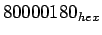

อีกรูปแบบหนึ่งของการเกิด Control Hazard เป็นผลมาจาก Exception พิจารณาคำสั่ง
add $1, $2, $1
เมื่อเกิด overflow ในการคำนวณ เราจะต้องทำการย้ายการควบคุมไปยังชุดโปรแกรมย่อยสำหรับจัดการกับ Exception เนื่องจากป้องกันค่าผิดพลาดที่จะเกิดขึ้นในระบบ
การจัดการกับ Exception มีลักษณะคล้ายกับ Branch โดยเริ่มจากการ Flush คำสั่งที่ตามคำสั่ง add ในไพพ์ลายน์ และทำการเรียกคำสั่งใหม่เข้ามา การ Flush ทำโดยเปลี่ยนคำสั่งในสเตท IF ให้เป็น nop และใส่ zero ไปในสัญญาณควบคุมในสเตท ID (ID.Flush) ในการเริ่ม Fetch คำสั่งจากแอดเดรส  ที่เป็นตำแหน่งของชุดโปรแกรมย่อยสำหรับจัดการกับ Arithmetic Overflow เราสามารถทำได้โดยการเพิ่มอินพุทที่ระบุแอดเดรส ไปยัง Multiplexer ก่อนหน้า PC รูป 6.40 แสดงเส้นทางข้อมูลของโปรเซสเซอร์แบบไพพ์ลายน์รองรับการเกิด Exception หลังจากการเกิด Exception เราสามารถตั้งค่าสัญญาณ EX.Flush เพื่อป้องการการเขียนรีจีสเตอร์ในขั้นตอนการ WB
ในขั้นตอนสุดท้ายคือการเก็บค่าแอดเดรสของคำสั่งที่ทำโห้เกิด Exception ลงใน Exception Program Counter (EPC) โดยการทำการบันทึกค่าแอดเดรส+ 4 และชุดโปรแกรมย่อยสำหรับจัดการกับ Exception จะทำการลบ 4 เพื่อให้ได้ค่าที่เหมาะสมต่อไป